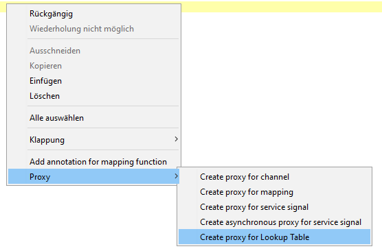

General class

Topic content
Concept
A general java class is a standard java class that can be used to implement scenario specific behavior. A general java class is especially useful when working with proxy functions. A proxy function is a automatically generated function that can be used to invoke scenario elements directly from java. Currently the following proxy types are supported:
•channel (Invoke an outbound channel)
•mapping (Invoke a mapping)
•service signal (Send a service signal at the end of the running transaction)
•asynchronous service signal (Send a service signal asynchronously without waiting to the end of the transaction)
•Lookup table (Invoke a lookup table map a key to the value stored in the lookup table)
Creation
Step 1 : Create a new Java Source. Select "General class" as Class template
Creating a user dfined java class
Creating a proxy function
When a proxy function has to be added, you have to show the context menu within the java editor. Within this context menu a section "proxy" is visible. When a proxy type is selected, orchestra asks for which scenario element a proxy function should be generated. After the selection of the scenario element the proxy function is directly added to the source code. Note: The proxy function can be invoked from every place within the scenario where java is used.
The following section describes how a proxy for a lookup table could be created:
Step 1: Create a proxy for a lookup table

Step 2: Select the required scenario element
Select the required scenario element
After this last step, the proxy function is added to the java class. The result can be seen in the following figure.
Generated proxy function
Note: Please do not change the content of a proxy function.